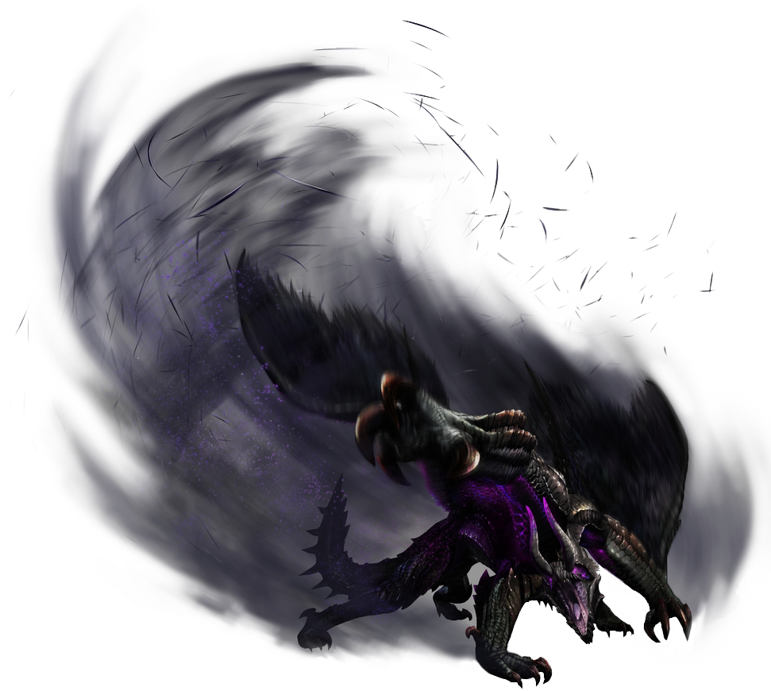

좋아하는 것
좋아하는 포켓몬
좋아하는 몬스터
좋아하는 게임
좋아하는 몬스터
몬스터헌터 월드에 고어마가라 넣어주세요.

생태
수수께끼 투성이인 흑식룡. 이곳저곳에서 신출귀몰하며, 특징적인 날개막을 나부끼며 날아가는 모습이 목격되고 있다. 적의 기척을 느끼면 자신의 감지 능력을 높이는 가루를 흩뿌리는데 다른 생물이 이것을 들이마시면 신체 능력에 큰 영향을 미친다.
라이브리 댓글 작성을 위해 JavaScript를 활성화 해주세요